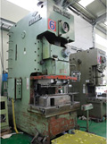
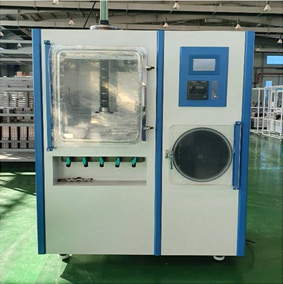
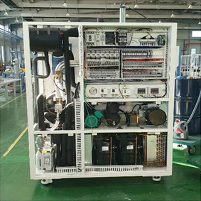
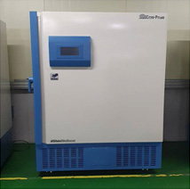
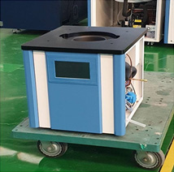

회사현황
주요거래처
주요 매출처
㈜일신바이오베이스 (80%)
127-81-64875
경기도 동두천시 삼육사로 548번길 (상패동)동결건조기, 초저온냉동고, 제약산업용 동결건조 자동 로딩/언로딩 장치, 극저온냉동고, 급속냉동고, 혈액냉장고, 시약냉장고, 제빙기, 진탕기, 인큐베이터, 초순수정제기 등을 생산하는 주 거래처
CK 전기 (10%)
212-03-94188
경기도 의정부시 서부로 545 경민벤처센터 651-1전동기, 발전기, 전기변환장치 제조업체
신장공업 (5%)
127-81-57637
경기도 의정부시 산단로 132번길 38가구 및 건축용 하드웨어류 개발,제조업체
태양공예 (5%)
137-13-59569
인천광역시 서구 검단로 326번길 34-3 (왕길동)목 공예품 제조업체
주요 매입처
상무철강㈜ (36.4%)
127-81-33561
경기도 포천시 군내면 용정리 87-31차 금속제품 도매업체
영신레이저 (17.2%)
231-01-37734
포천시 가산면 금현리 936-1원광파이프㈜ (4.5%)
139-81-21715
인천남동구 고잔동 712-21 남동공단 148선봉철강(3%)
139-81-21715
인천 남동구 고잔동 712-21 남동공단 148 2롯트
생산설비
| 품명 | 대수 | |
|---|---|---|
| 핀파워 SG 복합 샤링기 NCT | 1 | |
| CS 프레스 | 1 | 110 ton |
| CS 프레스 | 1 | 200 ton |
| CNC 절곡기 | 2 | 1.2M , 3M |
| 오토절곡기 | 1 | 2M |
아래의 사진은 위 순서와 상관없음을 알려드립니다.


- 
생산제품
동결건조기
왁진, 항생물질, 효소, 호르몬의 의약품과 동식물의 실험용sample, 식용식품등의 실험건조를 비롯하여 모든 수분함유 물질 동결건조
초저온냉동고 (FD120)

초저온냉동고
소형 초저온냉동고
초저온냉동고(FD80)

저온 냉공고는 강력한 냉각 시스템을 통해 영하 -40도 부터 -85도 까지 급속으로 빠르게 냉각됩니다.